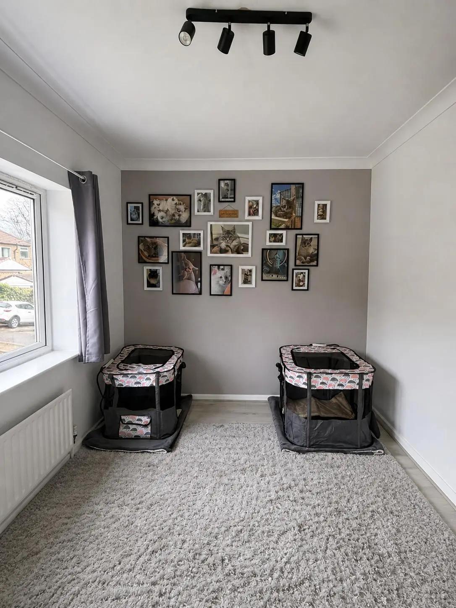

A small home in Yorkshire
Ragdoll, Maine Coon and British Shorthair kittens, raised at home in Leeds.
Julia & Mark
We're Julia and Mark, and Little Paws by Miles is simply our house with cats in it. A lot of cats, admittedly, but they've always been family first and breeding has always come second.
Three families, raised in one home
At the moment we have GCCF-registered Ragdolls alongside a few carefully chosen non-registered Ragdoll girls, TICA-registered Maine Coons, and a small British Shorthair line.
Each breed brings something different to the house. Ragdolls are the affectionate shadows, the cats who turn up the second you sit down. Maine Coons are clever and a little theatrical, with a gentleness that surprises people who only know them from photographs. Our British Shorthair is the calm in the room. Unbothered, steady, very good company.
We're affiliated with the Governing Council of the Cat Fancy and The International Cat Association.
A soft start, then the full family
Upstairs, we've built a dedicated kitten suite. It's a quiet, purpose-made nursery where our queens can settle in for pregnancy and birth without the bustle of the rest of the house. Comfortable, closely supervised, and designed to give each litter the softest possible start.

Kittens stay in the suite for their first few weeks and then, gradually, get introduced to family life. The hoover, the doorbell, our feet on the stairs, visitors at the door. By the time they leave us at thirteen weeks, very little fazes them.
We don't rush that timeline. Thirteen weeks isn't a target we're trying to beat. It's the minimum we're willing to consider.
Not a footnote
Health testing isn't negotiable for us, and it isn't something we want to bury in a footnote.
Our breeding cats are screened in line with breed recommendations through Langford Vets, Wisdom Panel and Perfect Paws Vets here in Leeds. Depending on the breed, that includes HCM screening, PKD testing, FIV, FeLV, and blood typing.
Julia holds a Level 3 Certificate in Feline Breeding, Birthing and Kitten Care from the Animal Care College. Mark is trained and approved by Pet Scanner to microchip our kittens here at home. Alongside all of that, we keep learning. From our vets, from breeders we respect, and from the shows we attend to stay close to breed standards.
Full health documentation is available for every prospective family. Ask, and it's yours.
Julia
Level 3 Certificate in Feline Breeding, Birthing & Kitten Care
Animal Care College
Mark
Pet Scanner Trained & Approved
Microchipping our kittens at home
Our partners
Langford Vets · Wisdom Panel
For breed-appropriate health screening
Our memberships
GCCF
The Governing Council of the Cat Fancy
The UK's largest registration body for pedigree cats. Our Ragdoll line includes GCCF-registered cats, and both our studs, Ralphy and Starsky, are listed on the official GCCF Stud Register.
TICA
The International Cat Association
A globally recognised pedigree cat registry. Our Maine Coons are TICA-registered, and both our studs are dual registered with GCCF and TICA.
We'll always stay small
We'll always stay small. That means fewer litters than we could theoretically have, more attention for every queen and kitten, and a long tail of ongoing support after you take your kitten home.
We love hearing how they're getting on years later, and we mean it when we say we're still here if you need us.
Ready to be the cat you've been waiting for
- Vet-checked
- Vaccinated
- Microchipped (by Mark, at home)
- A full kitten information pack covering everything you'll need
- Well-loved, well-prepared, and quite sure about people
Leeds, Yorkshire
We're hobby breeders based in Leeds, West Yorkshire. We raise our kittens at home rather than running a commercial setup. Most of our kitten families come from across Yorkshire (Leeds, Harrogate, York, Bradford, Wakefield, Sheffield), but we also welcome visitors from across the North of England and beyond. We welcome visitors by arrangement once we've had a chat first.